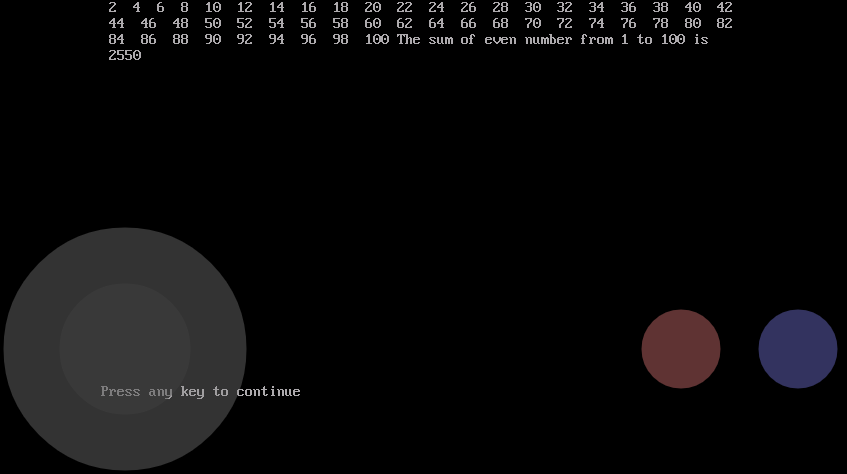
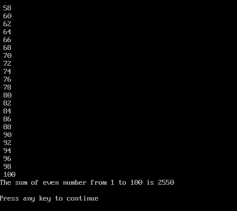

CLS
REM "To find the first 100 even numbers and its sum"
FOR N = 1 to 100
R = N MOD 2
IF R = 0 THEN
PRINT N;
S = S + N
ELSE
END IF
NEXT N
PRINT "The sum of even numbers from 1 to 100 are" ; S
END
You should write a program in Qbasic in following method.
You can see its output in the below figure"
|  |
 |